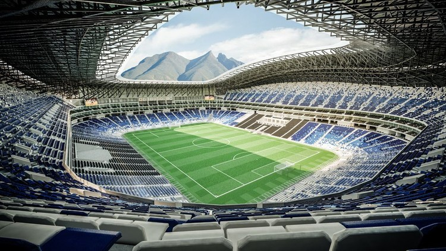
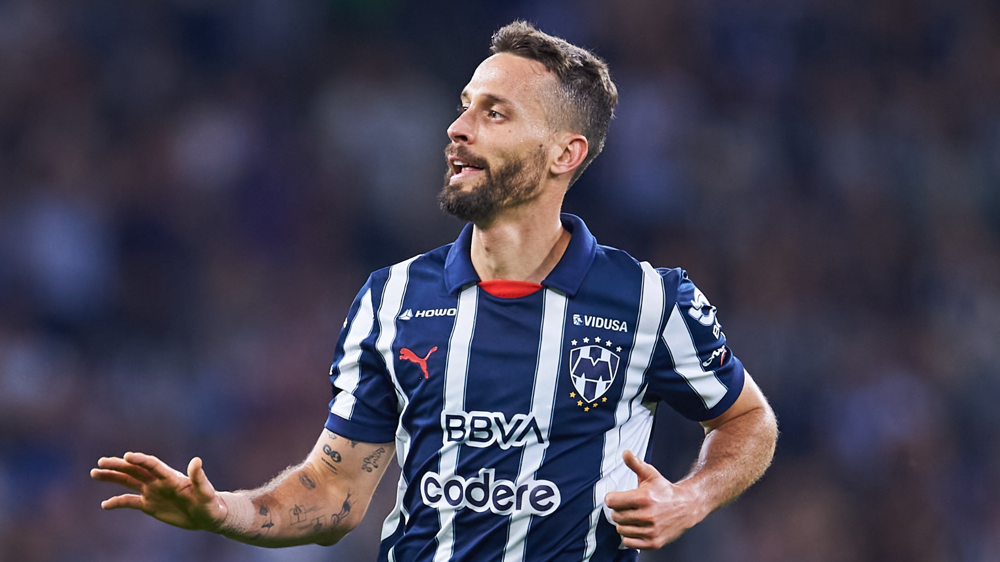
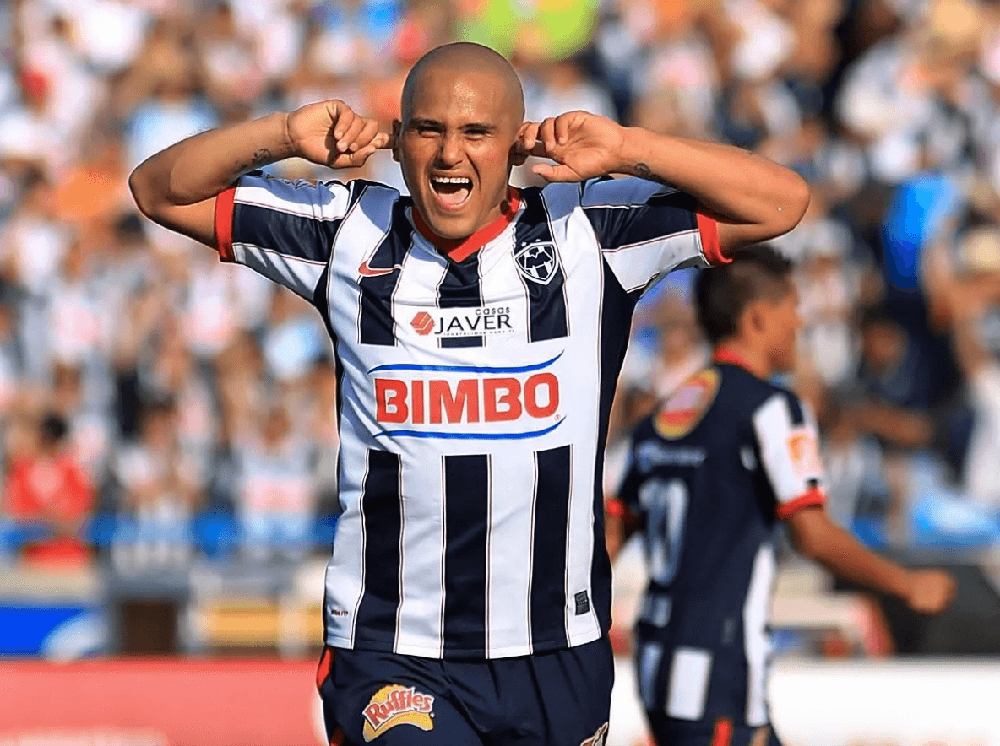
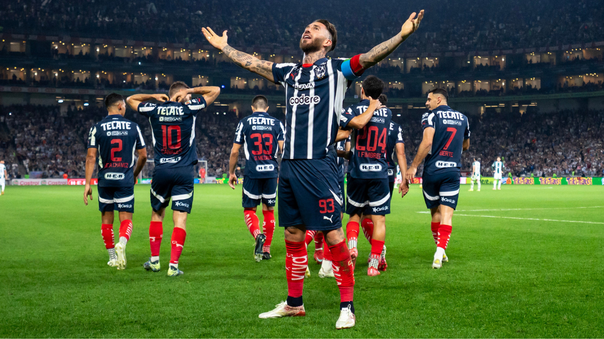

El Club de Fútbol Monterrey, conocido popularmente como Rayados, fue fundado en 1945 en la ciudad de Monterrey, Nuevo León.
A lo largo de su historia, Rayados ha conseguido importantes campeonatos en el fútbol mexicano y también ha destacado en competencias internacionales.
El equipo juega como local en el Estadio BBVA y sus colores tradicionales son el azul y el blanco. La afición rayada es una parte fundamental de la identidad del club y ha acompañado al equipo durante generaciones.
Nombre: club de futbol Monterrey
Apodo: Rayados, Pandilla
ciudad Monterrey, Nuevo Leon
Sede: Estadio BBVA
Colores: Azul y blanco
Hijos favoritos: los tigrillos de segunda



